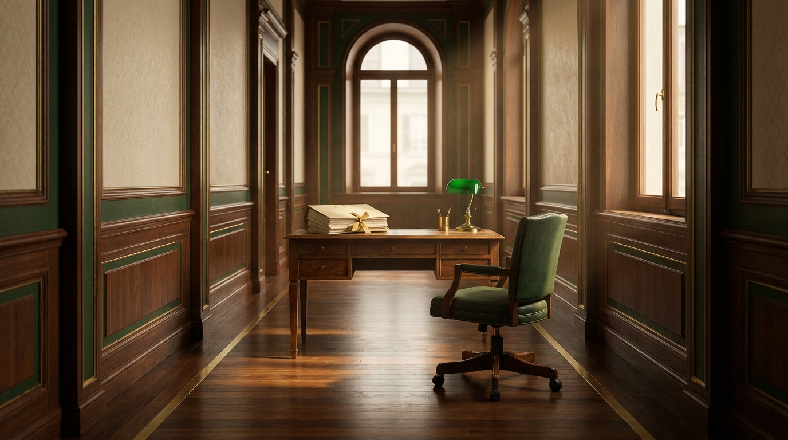

Straining sul lavoro: quando lo stress dà diritto al risarcimento
Lo stress da lavoro non è sempre mobbing. La Cassazione riconosce la figura dello straining: condotte ostili anche isolate che danneggiano la salute del lavoratore. Per il datore scatta la responsabilità ex art. 2087 c.c. anche senza una persecuzione sistematica. Capire la distinzione è decisivo per valutare se esistono i presupposti di un risarcimento.

Il fatto e perché conta
Nel linguaggio comune "mobbing" è diventato sinonimo di qualsiasi disagio in azienda. Sul piano giuridico, però, la nozione è più rigida: richiede una serie di condotte ostili, ripetute e sistematiche, dirette a emarginare il lavoratore. Quando questi elementi mancano, la domanda di risarcimento per mobbing viene respinta.
La giurisprudenza ha colmato lo spazio rimasto scoperto con una figura distinta: lo straining. Si tratta di una condizione di stress forzato causata dal datore di lavoro o dai superiori, che può derivare anche da un singolo episodio i cui effetti negativi si protraggono nel tempo. La differenza è sostanziale: mentre il mobbing esige la prova della sistematicità e dell'intento persecutorio, lo straining può configurarsi anche in assenza di entrambi.
Inquadramento normativo
Il perno è l'art. 2087 del Codice civile, che impone al datore di lavoro di adottare le misure necessarie a tutelare l'integrità fisica e la personalità morale dei lavoratori. È una norma a contenuto aperto: non elenca obblighi tassativi, ma vincola l'impresa a prevenire qualunque condizione lesiva della salute, compresa quella psichica.
Su questa base la Cassazione Civile ha chiarito che la responsabilità aziendale non presuppone necessariamente una campagna persecutoria. È sufficiente che il datore abbia tenuto, o tollerato, una condotta stressogena idonea a danneggiare la salute del dipendente. Lo straining, in altri termini, è una forma "attenuata" rispetto al mobbing sul piano dei requisiti, ma non su quello delle conseguenze: il danno alla persona, se provato, va comunque risarcito.
Resta fermo l'onere probatorio. Il lavoratore deve dimostrare la condotta lesiva, il danno alla salute (di norma con accertamento medico-legale) e il nesso di causa tra l'una e l'altro. Al datore spetta provare di aver adottato tutte le misure esigibili per evitare il pregiudizio.
Implicazioni pratiche
Per il lavoratore, la lettura della Cassazione amplia le possibilità di tutela. Anche chi non riesce a documentare una serie continuativa di vessazioni può ottenere il risarcimento se prova che una specifica scelta organizzativa — un demansionamento, un isolamento, l'assegnazione a mansioni mortificanti — ha generato un danno alla salute.
Per il datore di lavoro, il messaggio è chiaro: la prevenzione del rischio psicosociale non è un adempimento formale. Decisioni gestionali apparentemente neutre, se assunte o mantenute con disprezzo delle ricadute sul benessere del dipendente, possono fondare una responsabilità risarcitoria. La valutazione dei rischi prevista dalla normativa sulla sicurezza deve includere anche lo stress lavoro-correlato.
Un punto merita attenzione: il risarcimento non è automatico. Non basta lamentare malessere o riferire un clima difficile. Serve un quadro probatorio solido, in particolare sotto il profilo medico e documentale. È qui che molte domande si arenano.
Cosa fare in concreto
- Documentate i fatti per iscritto. Conservate email, ordini di servizio, comunicazioni e ogni atto che evidenzi la condotta lesiva e il momento in cui si è verificata.
- Acquisite un accertamento sanitario. Rivolgetevi al medico curante e, se necessario, a uno specialista, per far emergere il danno alla salute e il suo collegamento con la situazione lavorativa.
- Verificate la valutazione dei rischi. Il datore deve aver considerato lo stress lavoro-correlato: la sua assenza o inadeguatezza è un elemento rilevante.
- Agite con tempestività. I diritti risarcitori sono soggetti a termini di prescrizione: non rinviate la valutazione della posizione.
- Fate analizzare il caso prima di agire. Distinguere mobbing, straining e mero disagio non risarcibile richiede una verifica tecnica dei presupposti.
La distinzione tra mobbing e straining non è un esercizio di etichette. Incide direttamente su ciò che occorre provare e, di conseguenza, sulle reali possibilità di tutela. Consigliamo di affrontare ogni situazione con una valutazione preliminare del materiale disponibile, prima di formulare qualsiasi domanda risarcitoria.
---
*Contributo informativo a cura di Tamburro & Partners - Avv. Giuseppe Tamburro. Non costituisce parere legale.*
Ogni storia di lavoro ha i suoi tempi.
Se gestisci HR e vuoi un confronto su contenzioso, ispezioni o licenziamenti, scrivi allo studio. Ti rispondiamo entro un giorno lavorativo.